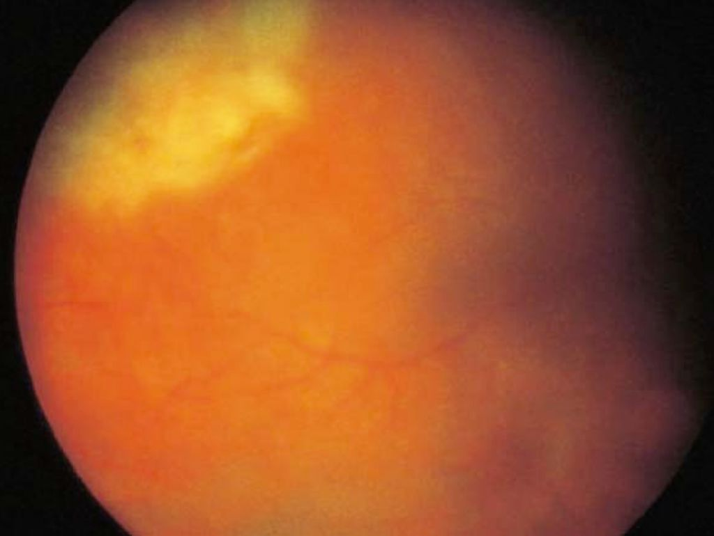
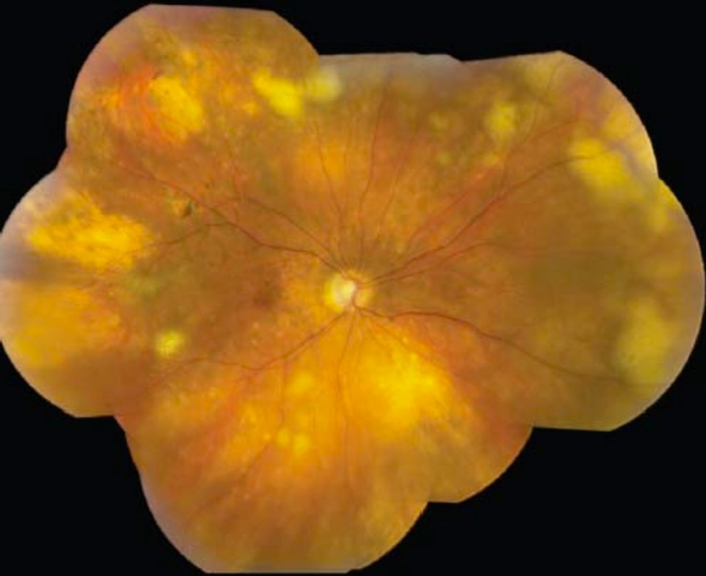
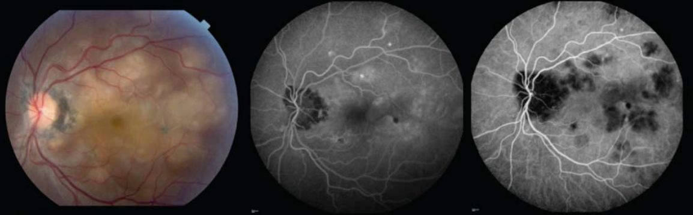
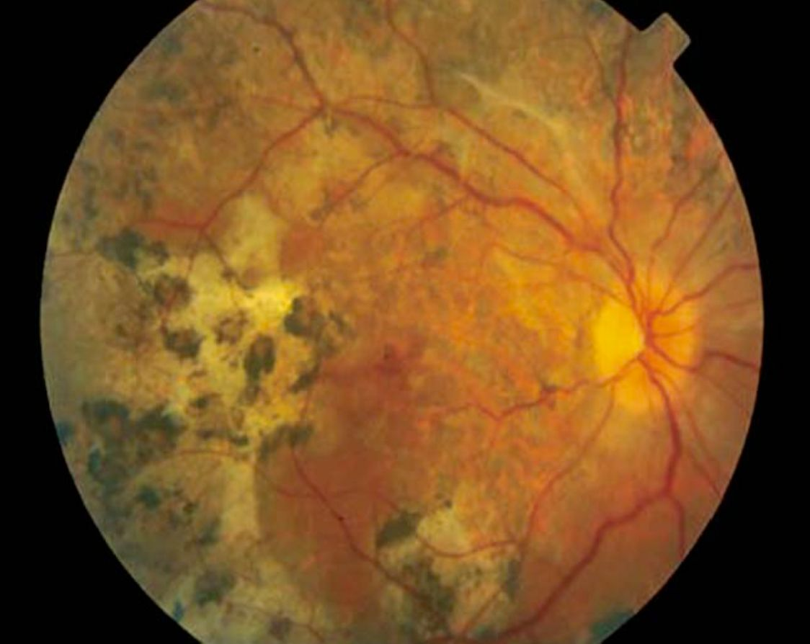

A young, otherwise healthy man presents to the emergency department with sudden central vision loss in one eye that occurred a couple of days previously. He now reports seeing flashes of light and has subsequent vision loss in the other eye. His fundus examination and fluorescein angiography are shown in the figures. What life-threatening condition is associated with the ocular condition he likely has?
Correct answer: A. cerebral vasculitis
Rationale
First, one must realize that the patient has acute posterior multifocal placoid pigment epitheliopathy (APMPPE), which is a white dot syndrome or inflammatory chorioretinopathy that is diagnosed by clinical presentation and fluorescein angiography findings in the early phase of the disease. It presents like the case in the question stem, with sudden unilateral vision loss with central and paracentral scotomas, and involvement of the fellow eye within days to weeks. Photopsias may precede vision loss. As seen in the fundus photo, APMPPE is characterized by multiple scattered large (1-2 disc areas), flat, yellow-white placoid lesions in the posterior pole, at the retinal pigment epithelium level, with minimal anterior segment inflammation and possible mild vitritis. Fluorescein angiography (FA) shows early hypofluorescent lesions (either corresponding to or more numerous than the lesions seen on funduscopy), and late hyperfluorescent staining, as seen in the FA in the question. When neurologic symptoms are present in the setting of the above findings, then cerebral vasculitis must be ruled out with full neurologic evaluation, as it is a life-threatening entity associated with APMPPE. Out of the white dot syndromes, only APMPPE is associated with cerebral vasculitis. The other posterior uveitides associated with cerebral vasculitis are collagen vascular diseases such as granulomatosis with polyangiitis.
Visual prognosis in APMPPE is favorable in that most patients regain 20/40 or better vision within 6 months. Residual visual dysfunction can occur in about 20% of patients. While systemic corticosteroids are not definitively beneficial for visual outcomes, they are indicated for patients with CNS vasculitis.
Focal segmental glomerulonephritis (FSGS) is incorrect; it is associated with granulomatosis with polyangiitis (GPA). GPA is a collagen vascular disease associated with anterior, intermediate, and posterior uveitis in ~10% of patients, with retinitis reported in up to 20% of patients. The retinitis presents as cotton-wool spots (Fig 3), with or without intraretinal hemorrhages, or severe vaso-occlusive pathology (ie, branch or central retinal artery or vein occlusion), which are not seen in the fundus photograph shown in the question stem. In up to 85% of patients, focal segmental glomerulonephritis develops, which if left untreated will incur significant mortality.
Central nervous system (CNS) lymphoma is incorrect; however, always in the differential for posterior uveitis are malignant masquerade syndromes including intraocular lymphoma, retinoblastoma, leukemia, choroidal metastases, and malignant melanoma. If this case presented with primary CNS lymphoma (PCNSL) associated with primary vitreoretinal lymphoma (PVRL), then the retinal findings would classically include small multifocal subretinal granular infiltrates (Fig 4). Additionally, fluorescein angiography would only show hypofluorescent areas due to blockage from sub-RPE masses or RPE clumping. A leopard-spot pattern with alternating hyper- and hypofluorescence may also be seen. Prognosis is poor for patients with PVRL and CNS involvement with 5-year overall survival of ~60% with treatment.
Tuberculosis (TB) is also incorrect in this classic presentation of APMPPE, however TB should always be in the differential for posterior uveitis (and anterior uveitis). When choroidal involvement occurs, disseminated choroiditis is the most common presentation with multiple (5 to several hundred) discrete yellowish lesions ranging in size (0.5-3.0 mm in diameter) (Figure 5). They may be accompanied by disc edema, hemorrhages in the nerve fiber layer, vitritis, and granulomatous anterior uveitis. Another possible presentation would be a single, large, and elevated choroidal mass (tuberculoma) ranging from 4 mm to 14 mm, with retinal detachment and macular star formation. FA of active choroidal lesions shows early hypo-hyperfluorescence and late leakage (which is not seen in APMPPE); however, cicatricial lesions show early blockage with late staining. Lastly, TB can present with a multifocal choroiditis that has a serpiginoid pattern, also called serpiginous-like choroiditis (Figure 6). Treatment consists of intensive 8-week therapy of isoniazid, rifampin, pyrazinamide, and ethambutol, followed by 18 weeks of isoniazid and rifampin. Substantial mortality is seen with multidrug-resistant TB in HIV-infected patients.




Ophthalmology BCSC Question Bank — Uveitis & Ocular Inflammation — chapter/edition not encoded in source, confirm